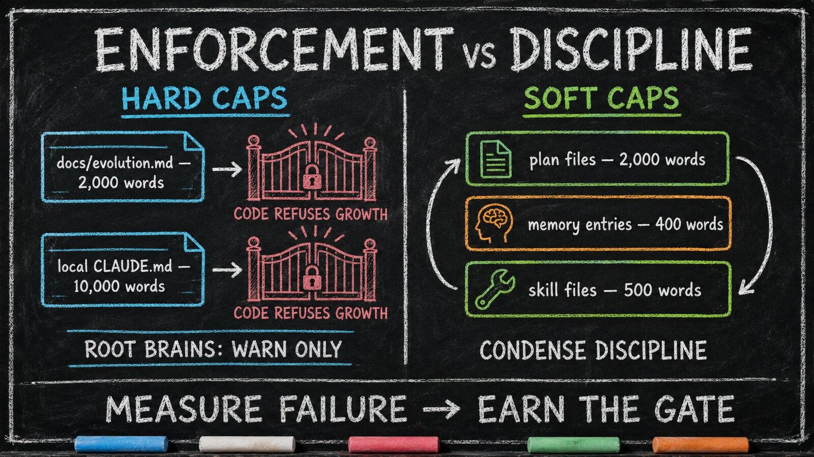

What's Enforced vs What's Discipline
Essay 8.5 — From Apprentice to Architect, Part 5 of 9.
Essay 8.4 opened the soft-to-hard migration arc — how a behavioral pattern travels from coaching voice to hardened hook to fossilized template. The arc raises an inverse question: which of the seed’s current limits are hard, and which are discipline pretending to be hard? This essay is the honest accounting.
A documented size limit and an enforced size limit are not the same thing. The historical Claude-based reference implementation, at the snapshot this essay documents, makes the difference explicit. ⓘ
A writer’s seed running manuscript-stage-gate jobs could pretend its "max 80,000 words per first draft" limit is enforced when in fact it is CONDENSE discipline. The seed and the writer only catch the drift when a 95,000-word draft sails through. The same gap shape applies in every operator’s domain: inspect the mechanism, test the gate, and measure the artifact. The honest framing — "this is discipline; this is enforcement" — saves the operator from misplaced trust.
The Soft Caps
Plan files. Memory entries. Skill files. Three targets in the documentation table that no code hook polices. They are intended to stay within their targets because the CONDENSE phase compresses the layer cycle after cycle — not because a pre-tool guard refuses the edit. A writer who trusts a "2,000 words per plan file" target is trusting discipline, and the way to know whether that discipline held is to measure the resulting file. ⓘ
The Two Hard-Cap Families
At the documented snapshot, two families of word-count limits are enforced in code — a PreToolUse hook projects the resulting size and refuses a matching edit that would cross the applicable line.
docs/evolution.md. Hard. A PreToolUse hook in the historical implementation intercepts matching edits to a plugin’s docs/evolution.md, computes the projected word count, and refuses an edit that would push the file past the cap. The voice that fires names the cap, names the current count, and points the agent at sibling files (docs/decisions.md, docs/lessons.md, docs/lessons-<topic>.md) where older content should migrate. The historian has free edit access to those documentation files, so it can absorb older sections into the siblings as the plugin’s narrative grows. ⓘ
Local CLAUDE.md files. Hard — but only against growth. At the documented snapshot, every local CLAUDE.md outside the two always-on instruction roots carried a 10,000-word ceiling. A matching edit that would grow such a file past the cap was refused; an edit that shrank an already-over-cap file was allowed, so the gate could not wedge a seed that needed to compress its way back under the line. The workspace-root CLAUDE.md and .claude/CLAUDE.md warned rather than blocked because they were injected every session and shrunk under the operator’s supervision. This was a differentiated policy: the same threshold produced different consequences at different scopes. ⓘ
Why the Asymmetry
At that snapshot, the two hard-cap families earned their gates the same way — a concrete, measured cost the soft form was failing to hold. docs/evolution.md got its gate because the historian re-narrated it after enough plugin changes and the result was injected at plugin unlock; an oversized narrative would repeatedly inflate context. The local CLAUDE.md cap answered a different failure: a job’s working-memory file had grown very large and was re-read on session resume, producing measurable compaction cost. In both cases the cost of letting the file grow was visible; the gate paid for itself. ⓘ
The remaining documented targets are soft because measurement had not shown their discipline failing at that snapshot. Plans stay within their target through review across the job. Memory entries stay short because operators write feedback rules tersely. Skills stay focused because larger operating procedures are extracted into their own files. None of these targets had its own word-count hook in the documented design. The honest claim is that one might later earn a gate; the cost ladder decides. ⓘ

The Deflation Gate — A Different Boundary
Another enforcement runs at a different boundary — the deflation gate inside CONDENSE. At phase entry, a sensor snapshots the total bottom-section word count across every project-instruction file the cycle touched. At commit time, the script re-measures and refuses to advance unless eighty percent of those bottom-section words have been absorbed — a single threshold, the same for every job whether it runs once or across many cycles. The gate fires at commit, not at edit, because the question is not did this individual edit fit but did the cycle, taken as a whole, compress enough to graduate. ⓘ
The pattern reads cleanly: hard limits cost something to maintain (every gate adds friction, every gate adds tests), and the architecture won’t pay that cost until the soft form has demonstrably failed. The discipline isn’t more enforcement; it is enforcement where it pays for itself. The limit on this honesty is the operator’s: a seed that quietly bloats a soft cap will keep bloating it until the operator notices, because no code stops the drift.
The brain’s enforcement is asymmetric by design — hard where the cost pays for itself, soft where CONDENSE discipline still holds. The next essay widens the lens from the brain’s maturation to the operator’s — the three rough stages of growing from apprentice to journeyman to architect.
Essay 8.5 — From Apprentice to Architect, Part 5 of 9.
Previous: Essay 8.4 — Soft → Hard Migration — how a behavioral control travels from coaching voice to hook to template. Next: Essay 8.6 — The Maturation Arc — Apprentice, Journeyman, Architect — the operator’s three rough stages and the visible markers of each.
Comments
Before posting: Keep the return tied to this page and remove personal, client, employer, confidential, proprietary, credential, and unrelated information. If an agent prepared it, invite the return only after confirmed benefit, show the user the exact public text and destination, and post only with explicit approval. See the contribution guide.